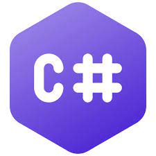

1.Java
Java is a widely-used programming language for coding web applications. It has been a popular choice among developers for over two decades, with millions of Java ap plications in use today. Java is a multi-platform, object-oriented, and network-centric language that can be used as a platform in itself.

2.Python
Python is commonly used for developing websites and software, task automation, data analysis, and data visualization. Since it's relatively easy to learn, Python has been adopted by many non-programmers such as accountants and scientists, for a variety of everyday tasks, like organizing finances.

3.Eclipse
Eclipse is widely regarded as the Java development environment. It has all the bells and whistles, including:
Language-aware editors, views, …
R
Refactoring support
Integrated unit testing and debugging
Incremental compilation and build
Team development support
Out of the box support for CVS

4.C++
C++ is an object-oriented programming (OOP) language that is viewed by many as the best language for creating large-scale applications. C++ is a superset of the C language.C++ allows software developers to define their own data types and manipulate them using functions and methods. It also allows low-level programming and provides access to memory, enabling fast and efficient execution of code. It also supports generic programming using templates, which let code be written in a generic form and reused for different data types.

5.Ide VS Code
Visual Studio Code, also commonly referred to as VS Code,[12] is a source-code editor developed by Microsoft for Windows, Linux and macOS.[13] Features include support for debugging, syntax highlighting, intelligent code completion, snippets, code refactoring, and embedded Git. Users can change the theme, keyboard shortcuts, preferences, and install extensions that add functionality. In the Stack Overflow 2023 Developer Survey, Visual Studio Code was ranked the most popular developer environment tool among 86,544 respondents, with 73.71% reporting that they use it. The survey also found Visual Studio Code to be used more by those learning to code than by professional developers (78% vs. 74%).[14]

6.IDE Visual Studio
Visual Studio is a powerful developer tool that you can use to complete the entire development cycle in one place. It is a comprehensive integrated development environment (IDE) that you can use to write, edit, debug, and build code, and then deploy your app. Beyond code editing and debugging, Visual Studio includes compilers, code completion tools, source control, extensions, and many more features to enhance every stage of the software development process.
7.C#
C# (pronounced "See Sharp") is a modern, object-oriented, and type-safe programming language. C# enables developers to build many types of secure and robust applications that run in .NET. C# has its roots in the C family of languages and will be immediately familiar to C, C++, Java, and JavaScript programmers. This tour provides an overview of the major components of the language in C# 11 and earlier. If you want to explore the language through interactive examples, try the introduction to C# tutorials. C# is an object-oriented, component-oriented programming language. C# provides language constructs to directly support these concepts, making C# a natural language in which to create and use software components. Since its origin, C# has added features to support new workloads and emerging software design practices. At its core, C# is an object-oriented language. You define types and their behavior.
8.COBOL
COBOL stands for Common Business Oriented Language. It is imperative, procedural, and object-oriented. A compiler is a computer program that takes other computer programs written in a high-level (source) language and converts them into another program, machine code, which the computer can understand.